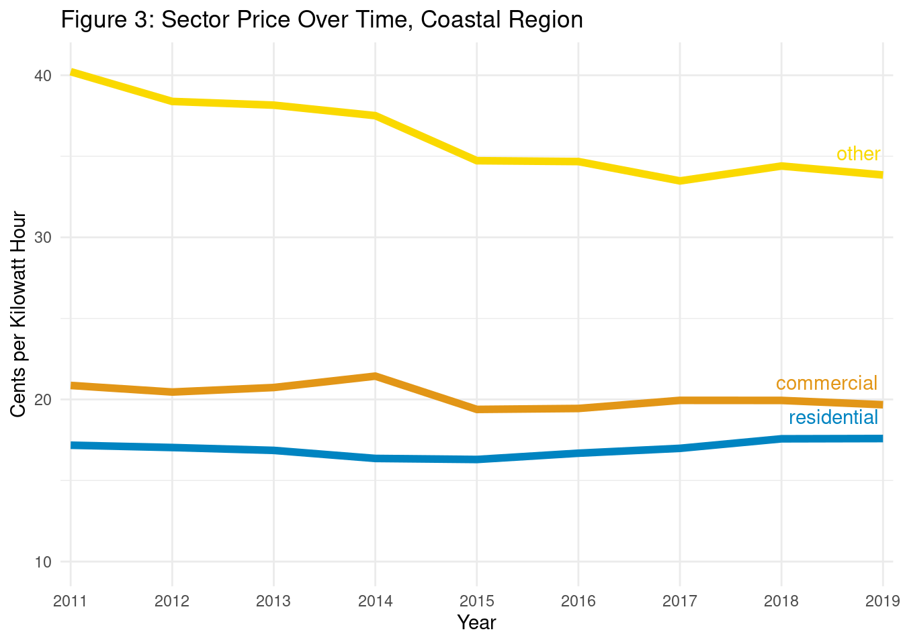
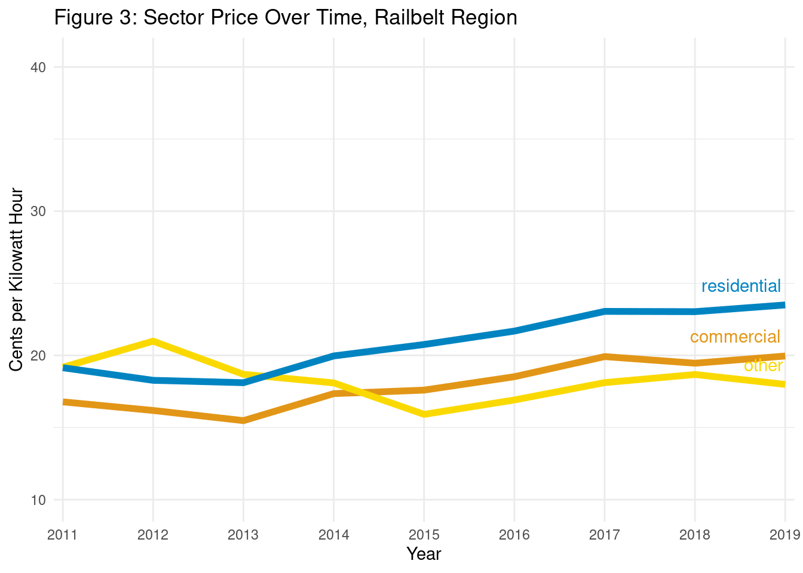
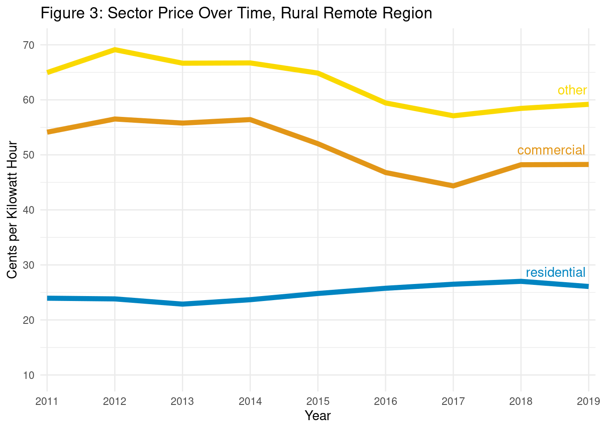

[1] "HTML code block active"2 Price of Electricity
Residential, Commercial, and Industrial Customer Classes, 2011-2019
2.1 General Overview
Utilities in Alaska serve multiple customers, namely residential, commercial, industrial, government/municipal, and community customer classes. Each customer class experiences a different set of costs such as per kWh charge as well as monthly customer charges. In this section, we aim to highlight trends in electricity prices for the residential, commercial, and other customer classes across the Coastal, Railbelt, and Rural Remote regions. We again restrict the data years in this section to 2011 to 2019 due to concerns with data validity for 2020-21.
In rural areas, many communities are eligible to participate in the PCE program (described in ?sec-pce-description). It is important to note that the prices presented here reflect the post-PCE adjustment and are annualized averages based on the calendar year. Yearly average effective rates listed here reflect the calendar year and not the fiscal year, which will make them different from those reported in the AEA’s annual reports. We also note that for PCE communities, the rates are reported in the original data. For data sourced from the EIA, rates were calculated by dividing total revenue by total kWh sold in each customer class - this may overestimate the rate as this would include revenue from customer charges.
Note that all prices in this section have been adjusted for inflation over time to 2021 dollars using the Bureau of Labor Statistics (BLS) Consumer Price Index (CPI) for all items in urban Alaska (BLS CUUSA427SA0). To our knowledge, there is no CPI that properly accounts for price changes over time in rural Alaska. However, the general trend shows that customer account-weighted prices have been relatively stagnant across all regions of the state.
2.1.1 Regional Overview
?fig-price-regions-classes shows the distribution of prices across a selected customer class. The three classes used in this analysis can be selected from the dropdown menu. Hover your pointer over the dot to display utility information.
Most notably, the dramatic effects of the PCE subsidy can be seen by comparing the price distribution of the residential customer class against the price distribution of the commercial/other customer classes in the Rural Remote and Coastal regions.
2.1.2 Regional Averages
Due to the wide range of electricity prices in Alaska, it is difficult to accurately summarize the data. Because of this, we determined that averages were best calculated using a customer account weighted average. Population is roughly correlated to price, with small communities experiencing higher rates than larger communities. The average number of customer accounts for the year was used to calculate the weighted arithmetic mean price for each year and region. ?fig-price-over-time is a graph of residential customer prices over time after weighting for the number of customer accounts.
2.2 Coastal
?fig-price-sector-coastal shows the average price of electricity in the Coastal region for each customer class and year. Between 2011 and 2019, the region experienced decreasing prices for Commercial and Other customers, while Residential customers have seen a slight increase in price.
The average real price (in 2021 dollars) of electricity for Residential customers in the Coastal region rose {ojs} coastal_res_change% from {ojs} coastal_res_2011 cents/kWh in 2011 to {ojs} coastal_res_2019 cents/kWh in 2019. The average price of electricity for Commercial customers in the Coastal region fell {ojs} coastal_com_change% from {ojs} coastal_com_2011 cents/kWh in 2011 to {ojs} coastal_com_2019 cents/kWh in 2019. Finally, the average price of electricity for Other customers in the Coastal region fell {ojs} coastal_other_change% from {ojs} coastal_other_2011 cents/kWh in 2011 to {ojs} coastal_other_2019 cents/kWh in 2019.
Residential customers in the Coastal region saw increases in the price of electricity while commercial and other customers saw decreases. However, the residential customer class continues to pay the lowest per kWh in the region due to a combination of low prices in high population areas and PCE subsidies in eligible communities.

2.3 Railbelt
?fig-price-sector-railbelt shows the average price of electricity in the Railbelt region for each customer class and each year of the report. Between 2011 and 2019, Other customers saw a large decrease in price, followed by a gradual increase. Residential and Commercial customers experienced slight decreases in price until 2013 when prices reversed and rose dramatically.
The average real price of electricity for Residential customers in the Railbelt rose {ojs} railbelt_res_change% from {ojs} railbelt_res_2011 cents/kWh in 2011 to {ojs} railbelt_res_2019 cents/kWh in 2019. The average price of electricity for Commercial customers in the Railbelt rose {ojs} railbelt_com_change% from {ojs} railbelt_com_2011 cents/kWh in 2011 to {ojs} railbelt_com_2019 cents/kWh in 2019. Finally, the average price of electricity for Other customers in the Railbelt fell {ojs} railbelt_other_change% from {ojs} railbelt_other_2011 cents/kWh in 2011 to {ojs} railbelt_other_2019 cents/kWh in 2019.
This region differs significantly from the Coastal and Rural Remote regions in that residential customers pay more for electricity than the Commercial or Other customer classes.

2.4 Rural Remote
?fig-price-sector-rural shows the average price of electricity in the Rural Remote region for each customer class and year of the report. Between 2011 and 2019, Residential customers experienced a gradual increase in rates, while Commercial and Other customers experienced a gradual decrease in rates.
The average price of electricity for the Residential customers in the Rural Remote region rose {ojs} rural_res_change% from {ojs} rural_res_2011 cents/kWh in 2011 to {ojs} rural_res_2019 cents/kWh in 2019. The average price of electricity for Commercial customers in the Rural Remote region fell {ojs} rural_com_change% from {ojs} rural_com_2011 cents/kWh in 2011 to {ojs} rural_com_2019 cents/kWh in 2019. Finally, the average price of electricity for Other customers in the Rural Remote region fell {ojs} rural_other_change% from {ojs} rural_other_2011 cents/kWh in 2011 to {ojs} rural_other_2019 cents/kWh in 2019.
